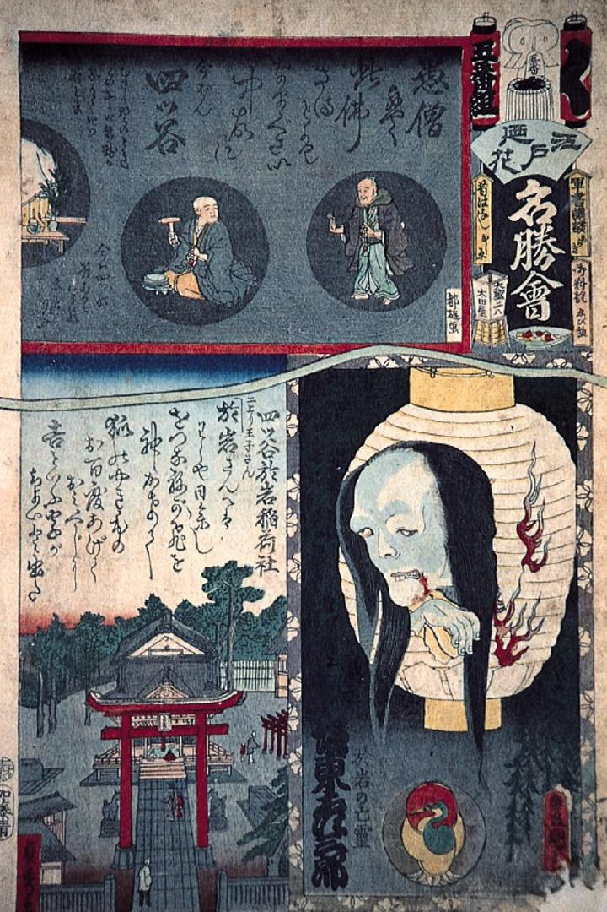

破れた提灯の中から、お岩の幽霊が顔を覗かせている。髪は乱れ、青白く、口の端からは血が滴っている。
著作者：歌川国貞二代・歌川貞秀・都遊合作／出典：親書誌：M80_naprstek_0007：江戸乃花名勝会四ツ谷；エドノハナメイショエヨツヤ／日付：2011／資源識別子：M80_naprstek_0007_0001_0000
Copyright (c)2010- International Research Center for Japanese Studies, Kyoto, Japan. All rights reserved.